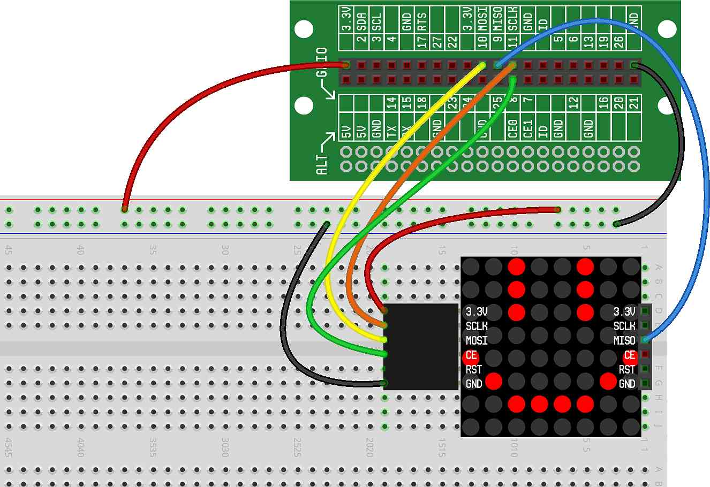

In this project, we'll create a rectangular pulsating effect on the display.
The pulsating rectangle will consist of four individual rectangles nested within each other. The smallest rectangle will simply be a 2x2 square of LEDs at the center of the display. The largest rectangle will sit at the outer edge of the display:
FFFFFFFF FBBBBBBF FB7777BF FB7337BF FB7337BF FB7777BF FBBBBBBF FFFFFFFF
By slowly changing the color intensity of the rectangles over time, we can generate a pulsating effect. Each rectangle will have a slightly different color than the one next to it.
Your breadboard should still have the circuit we wired in the project. As a reminder, here is what it should look like: 
The code for this project will do the following:
Initialize a list of color intensities for the four rectangles we plan to draw (with each one successively brighter)
In a loop, for each of the four rectangles, draw the rectangle with the assigned color intensity
Each time through the loop, increase the intensity of each rectangle (and reset to intensity 0 if it goes above the maximum threshold of 15)
Because each of the rectangles is increasing in brightness in a fixed pattern, it will appear that the rectangles are animated on the LED Matrix. Here is what the code should look like:
Give it a try. You should see a series of pulsating rectangles.
The four rectangles are individually drawn on the screen with very
similar code. That is, the code on lines 10-13 is repeated almost
identically four times, once for each rectangle. Can you instead modify this
code to use a for loop that creates these four rectangles?
Can you add a button that, for each time it is pressed, increases the speed that the rectangles pulsate?
Can you create a similar pulsating effect with 8 vertical lines across the screen?
Can you create a similar pulsating effect with diagonal lines? Note: when using diagonal lines, there are 15 lines, of different lengths.